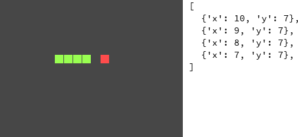
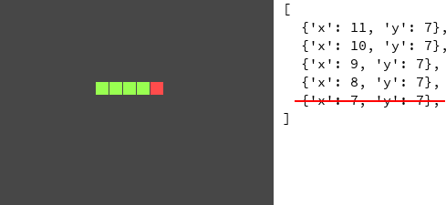
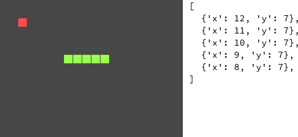

Home page > Pygame Zero tutorials
Snake
A tutorial for Python and Pygame Zero 1.2
Please send any feedback to simple.game.tutorials@gmail.com

Rules
Eating food makes the snake grow. When the food is eaten it moves to another random position.
The snake will wrap around to the other side of the screen when it goes off the edge.
The game is over when the snake crashes into itself.
Controls
| Arrow keys | Change direction |
Overview
The snake is represented by a sequence of X and Y positions.
The food is represented by a single X and Y position.
When the snake moves, then the last item in the sequence (i.e. its old tail position) is removed, and an item is added to the front (i.e. its new head position) in the direction that the snake is going.
 If the new head position is at the position same as the food's position, then the snake's tail is not removed, and the food is moved to a random position not occupied by the snake.
If the new head position is at the same position as any of the snake's other segments, then the game is over.
Coding
Drawing the background
The playing area is 20 cells wide and 15 cells high, and each cell has a side length of 15 pixels.
A rectangle is drawn for the background.
def draw(): screen.fill((0, 0, 0)) grid_x_count = 20 grid_y_count = 15 cell_size = 15 screen.draw.filled_rect( Rect( 0, 0, grid_x_count * cell_size, grid_y_count * cell_size ), color=(70, 70, 70) )

Drawing the snake
The snake's segments are stored as X and Y positions and drawn as squares.
def draw(): # etc. snake_segments = [ {'x': 2, 'y': 0}, {'x': 1, 'y': 0}, {'x': 0, 'y': 0}, ] for segment in snake_segments: screen.draw.filled_rect( Rect( segment['x'] * cell_size, segment['y'] * cell_size, cell_size - 1, cell_size - 1 ), color=(165, 255, 81) )

Timer
The snake will move once every 0.15 seconds.
A timer variable starts at 0 and increases by dt each frame.
When the timer is at or above 0.15 it is reset to 0.
For now, 'tick' is printed every time the snake will move.
timer = 0 def update(dt): global timer timer += dt if timer >= 0.15: timer = 0 # Temporary print('tick')
Moving the snake right
The next position of the snake's head is calculated by adding 1 to the current X position of the snake's head (i.e. the first element of the segments list). This new segment is added to the start of the segments list.
The last element of the segments list (the snake's tail) is removed.
The segments list is changed in the update function, so it is moved to be global.
snake_segments = [ {'x': 2, 'y': 0}, {'x': 1, 'y': 0}, {'x': 0, 'y': 0}, ] timer = 0 def update(dt): global timer timer += dt if timer >= 0.15: timer = 0 next_x_position = snake_segments[0]['x'] + 1 next_y_position = snake_segments[0]['y'] snake_segments.insert(0, {'x': next_x_position, 'y': next_y_position}) snake_segments.pop()
Moving the snake in all four directions
The snake's current direction is stored in a variable, and is changed using the arrow keys.
The snake's next head position is set based on this direction.
# etc. direction = 'right' def update(dt): global timer timer += dt if timer >= 0.15: timer = 0 next_x_position = snake_segments[0]['x'] next_y_position = snake_segments[0]['y'] if direction == 'right': next_x_position += 1 elif direction == 'left': next_x_position -= 1 elif direction == 'down': next_y_position += 1 elif direction == 'up': next_y_position -= 1 snake_segments.insert(0, {'x': next_x_position, 'y': next_y_position}) snake_segments.pop() def on_key_down(key): global direction if key == keys.RIGHT: direction = 'right' elif key == keys.LEFT: direction = 'left' elif key == keys.DOWN: direction = 'down' elif key == keys.UP: direction = 'up'

Preventing moving straight backwards
The snake shouldn't be able to move in the opposite direction it's currently going in (e.g. when it's going right, it shouldn't immediately go left), so this is checked before setting the direction.
def on_key_down(key): global direction if key == keys.RIGHT and direction != 'left': direction = 'right' elif key == keys.LEFT and direction != 'right': direction = 'left' elif key == keys.DOWN and direction != 'up': direction = 'down' elif key == keys.UP and direction != 'down': direction = 'up'
Using direction queue
Currently, the snake can still go backwards if another direction and then the opposite direction is pressed within a single tick of the timer. For example, if the snake moved right on the last tick, and then the player presses down then left before the next tick, then the snake will move left on the next tick.
Also, the player may want to give multiple directions within a single tick. In the above example, the player may have wanted the snake to move down for the next tick, and then left on the tick after.
A direction queue is created. The first item in the queue is the direction the snake will move on the next tick.
If the direction queue has more than one item, then the first item is removed from it on every tick.
When a key is pressed, the direction is added to the end of the direction queue.
The last item in the direction queue (i.e. the last direction pressed) is checked to see if it's not in the opposite direction of the new direction before adding the new direction to the direction queue.
# Removed: direction = 'right' direction_queue = ['right'] def update(dt): global timer timer += dt if timer >= 0.15: timer = 0 if len(direction_queue) > 1: direction_queue.pop(0) # etc. if direction_queue[0] == 'right': next_x_position += 1 elif direction_queue[0] == 'left': next_x_position -= 1 elif direction_queue[0] == 'down': next_y_position += 1 elif direction_queue[0] == 'up': next_y_position -= 1 # etc. def on_key_down(key): # Removed: global direction if (key == keys.RIGHT and direction_queue[-1] != 'left'): direction_queue.append('right') elif (key == keys.LEFT and direction_queue[-1] != 'right'): direction_queue.append('left') elif (key == keys.DOWN and direction_queue[-1] != 'up'): direction_queue.append('down') elif (key == keys.UP and direction_queue[-1] != 'down'): direction_queue.append('up') def draw(): # etc. # Temporary for direction_index, direction in enumerate(direction_queue): screen.draw.text( 'direction_queue[' + str(direction_index) + ']: ' + direction, (15, 15 + 15 * direction_index) )
Preventing adding the same direction twice
If the last direction is the same direction as the new direction, then the new direction is not added to the direction queue.
def on_key_down(key): if (key == keys.RIGHT and direction_queue[-1] != 'right' and direction_queue[-1] != 'left'): direction_queue.append('right') elif (key == keys.LEFT and direction_queue[-1] != 'left' and direction_queue[-1] != 'right'): direction_queue.append('left') elif (key == keys.DOWN and direction_queue[-1] != 'down' and direction_queue[-1] != 'up'): direction_queue.append('down') elif (key == keys.UP and direction_queue[-1] != 'up' and direction_queue[-1] != 'down'): direction_queue.append('up')
Wrapping around the screen
If the next position would be off the grid, it is wrapped around to the position on the other side.
The grid X/Y counts are reused from drawing the background, so they are moved to be global.
# etc. grid_x_count = 20 grid_y_count = 15 def update(dt): # etc. if direction_queue[0] == 'right': next_x_position += 1 if next_x_position >= grid_x_count: next_x_position = 0 elif direction_queue[0] == 'left': next_x_position -= 1 if next_x_position < 0: next_x_position = grid_x_count - 1 elif direction_queue[0] == 'down': next_y_position += 1 if next_y_position >= grid_y_count: next_y_position = 0 elif direction_queue[0] == 'up': next_y_position -= 1 if next_y_position < 0: next_y_position = grid_y_count - 1 # etc. def draw(): # Moved: grid_x_count = 20 # Moved: grid_y_count = 15

Drawing food
The food is stored as a pair of X and Y values and is drawn as a square.
The random module is imported so that random.randint can be used.
import random # etc. food_position = { 'x': random.randint(0, grid_x_count - 1), 'y': random.randint(0, grid_y_count - 1), } def draw(): # etc. screen.draw.filled_rect( Rect( food_position['x'] * cell_size, food_position['y'] * cell_size, cell_size - 1, cell_size - 1 ), color=(255, 76, 76) )
Simplifying code
The code for drawing a snake's segment and drawing the food is the same except for the color, so a function is made with the color as a parameter.
def draw(): # etc. def draw_cell(x, y, color): screen.draw.filled_rect( Rect( x * cell_size, y * cell_size, cell_size - 1, cell_size - 1 ), color=color ) for segment in snake_segments: draw_cell(segment['x'], segment['y'], color=(165, 255, 81)) draw_cell(food_position['x'], food_position['y'], (255, 76, 76))
Eating food
If the snake's new head position is the same as the food's position, then the snake's tail is not removed, and the food gets a new random position.
def update(dt): global timer global food_position # etc. if timer >= 0.15: # etc. if (snake_segments[0]['x'] == food_position['x'] and snake_segments[0]['y'] == food_position['y']): food_position = { 'x': random.randint(0, grid_x_count - 1), 'y': random.randint(0, grid_y_count - 1), } else: snake_segments.pop()
Simplifying code
The code for setting the food to a random position is reused, so a function is made.
def move_food(): global food_position food_position = { 'x': random.randint(0, grid_x_count - 1), 'y': random.randint(0, grid_y_count - 1) } move_food() def update(dt): # etc. if (snake_segments[0]['x'] == food_position['x'] and snake_segments[0]['y'] == food_position['y']): move_food() else: snake_segments.pop()
Moving food to free positions
Instead of moving the food to any random position, it is moved to a position not occupied by the snake.
All of the positions of the grid are looped through, and for each grid position all of the segments of the snake are looped through, and if no segments of the snake are at the same position as the grid position, then the grid position is added to a list of possible food positions. The next food position is selected randomly from this list.
# etc. def move_food(): global food_position possible_food_positions = [] for food_x in range(grid_x_count): for food_y in range(grid_y_count): possible = True for segment in snake_segments: if food_x == segment['x'] and food_y == segment['y']: possible = False if possible: possible_food_positions.append({'x': food_x, 'y': food_y}) food_position = random.choice(possible_food_positions) move_food()
Game over
The snake's segments are looped through, and if any of them except for the last one is at the same position as the snake's new head position, then the snake has crashed into itself.
The last segment is not checked because it will be removed within the same tick.
For now, 'collision' is printed when the snake crashes into itself.
def update(dt): # etc. can_move = True for segment in snake_segments[:-1]: if (next_x_position == segment['x'] and next_y_position == segment['y']): can_move = False if can_move: snake_segments.insert(0, {'x': next_x_position, 'y': next_y_position}) if (snake_segments[0]['x'] == food_position['x'] and snake_segments[0]['y'] == food_position['y']): move_food() else: snake_segments.pop() else: print('collision')
Resetting the game
A function is made which sets the initial state of the game.
This function is called before the game begins and when the snake crashes.
grid_x_count = 20 grid_y_count = 15 def move_food(): # etc. def reset(): global timer global direction_queue global snake_segments timer = 0 direction_queue = ['right'] snake_segments = [ {'x': 2, 'y': 0}, {'x': 1, 'y': 0}, {'x': 0, 'y': 0}, ] move_food() reset() def update(dt): # etc. if can_move: # etc. else: reset()
Pausing after the snake has crashed
A variable is used to store whether or not the snake is alive, and it is set to False when the snake has crashed.
If the snake is dead, then the timer waits for 2 seconds before calling reset.
def reset(): # etc. global snake_alive # etc. snake_alive = True def update(dt): global timer global food_position global snake_alive timer += dt if snake_alive: if timer >= 0.15: timer = 0 # etc. if can_move: # etc. else: snake_alive = False elif timer >= 2: reset()
Changing the snake's color when it is dead
The snake's color is changed based on whether it is alive or not.
def draw(): # etc. for segment in snake_segments: color = (165, 255, 81) if not snake_alive: color = (140, 140, 140) draw_cell(segment['x'], segment['y'], color) # etc.